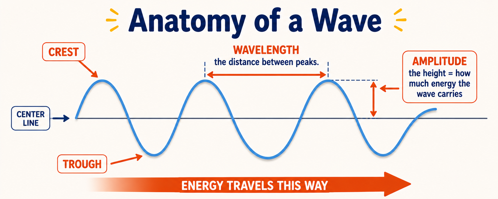

Keep this question in mind. By the end, you’ll measure a wave’s amplitude and wavelength and use models to show how a wave carries energy.
Have you ever seen fans do “the wave” at a big game? A wave of people standing up races all the way around the stadium. Be the crowd, and keep your eye on the fan in the red cap.
Now think about other waves you’ve seen. What wiggled, and what traveled?
Tap a card to flip it and read what the word means.
Part 1 · A Wave Is Moving Energy
A waveWaveA pattern of moving energy. is a pattern of energy that travels through a mediumMediumThe stuff a wave travels through.. The medium can be water, air, a rope or a slinky: anything that can wiggle.
Watch a slinky on a table. Push one end. A bump travels down the slinky. The COILS don't travel. Each one just wiggles in place, but the bump (the wave) moves the whole length. This is energy transferEnergy transferEnergy moves from place to place. in action.
Try it with five kinds of stuff. Tag one piece and send a wave.
Part 2 · Wave Parts
Every wave has the same parts. The crestCrestThe top of a wave. is the top. The amplitudeAmplitudeWave height. is how tall the wave is, measured from the middle to the crest. The wavelengthWavelengthDistance crest to crest. is the distance from one crest to the next.
- Big amplitude → the wave carries MORE energy. A huge ocean wave does much more work on the shore than a tiny ripple.
- Small amplitude → less energy.
- Short wavelength → crests are close together.
- Long wavelength → crests are far apart.
A big stormy ocean wave has BIG amplitude (very tall) and a long wavelength. A small ripple from a pebble has small amplitude and short wavelength. Both are real waves; both transfer energy.

Now measure three waves on grid paper.
Science Connection: Sound is a wave made by vibrations (fast back-and-forth shakes). When an object vibrates fast, it makes a high pitch (a high sound). When it vibrates slowly, it makes a low pitch.
Part 3 · Shake It Yourself
Picture a slinky stretched across the floor. A red ribbon is tied to one coil, and a tower of cups waits at the far end. Wiggle your end gently. Then wiggle it hard. Watch the ribbon and the cups.
A pebble is dropped in a pond. A leaf 10 feet away bobs up and down. What traveled the 10 feet?
Which property of a wave tells you how much ENERGY it carries?
In a slinky wave, what travels along the slinky?
🌿 Part B — Short Answer
Answer in complete sentences. Use vocabulary words from today's lesson.
🎨 Part C — My Wave Model
Make a wave at home with a jump rope, a string or a slinky. Or think of a wave you’ve seen in a pond, a pool or a bathtub. Draw it, label its parts and write one sentence about its amplitude and energy.
A classmate says, "When a wave moves through water, the water has to travel with it."
Do you agree or disagree? Prove it with two pieces of evidence from today's lesson.
Nicely done. You can now explain that a waveWaveA pattern of moving energy. transfers energy through a mediumMediumThe stuff a wave travels through. without the medium going anywhere. You can label a wave with its amplitudeAmplitudeWave height. and wavelengthWavelengthPeak-to-peak distance., and explain that bigger amplitude means more energy. Next lesson: you’ll use patterns of light and sound to design your own code and send a secret message.